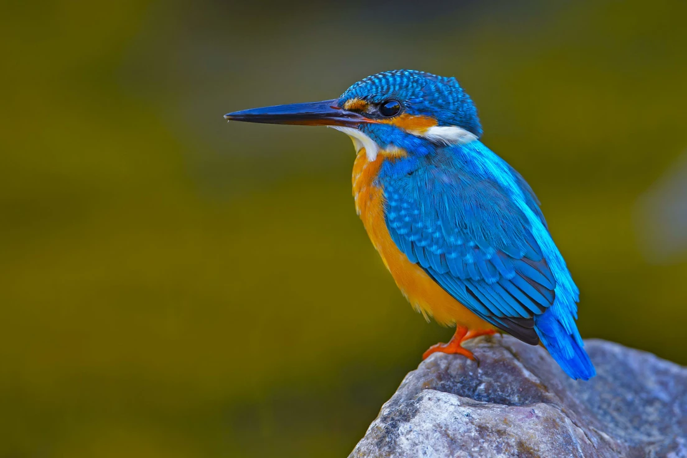

Kingfisher
- Home
- Story
- Contact
Life of Kingfisher

Kingfishers are a family, the Alcedinidae, of small to medium-sized, brightly colored birds in the order Coraciiformes. They have a cosmopolitan distribution, with most species found in the tropical regions of Africa, Asia, and Oceania, but also can be seen in Europe. They can be found in deep forests near calm ponds and small rivers. The family contains 116 species and is divided into three subfamilies and 19 genera. All kingfishers have large heads, long, sharp, pointed bills, short legs, and stubby tails. Most species have bright plumage with only small differences between the sexes. Most species are tropical in distribution, and a slight majority are found only in forests.
Facts about Kingfisher
- kingfisher has a huge world distribution, and can be found as far east as the Solomon Islands.
- The largest kingfisher in the world is Australia’s laughing kookaburra. It weighs up to 500gm, or 15 times as much as our bird.
- Many of the world’s kingfishers don’t eat fish and rarely go near water.
- In the winter, a kingfisher needs to eat around 15 or 16 minnows a day.